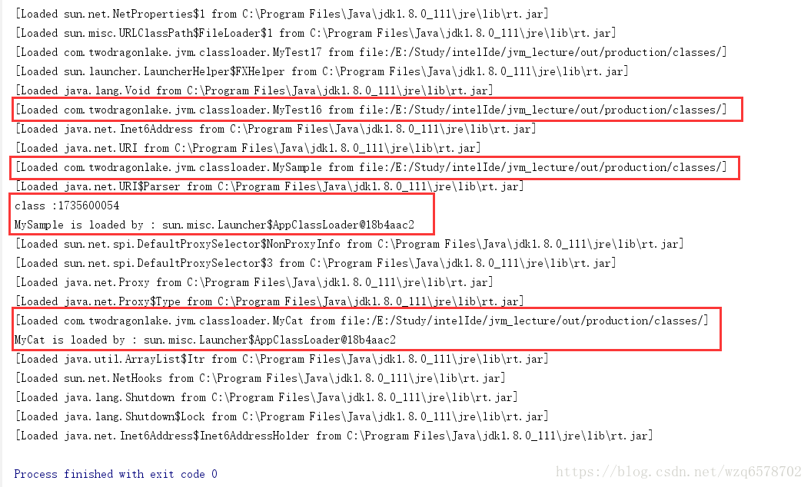
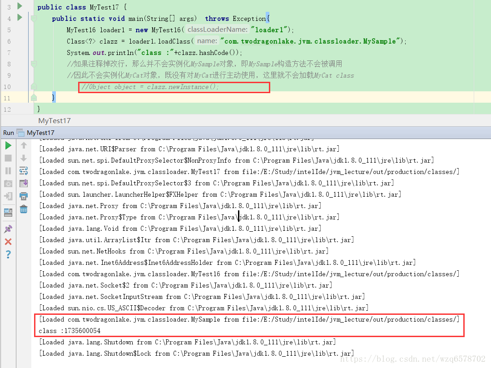

接着上次的事例 我们上次加载的类都是MyTest的这样的一个类，但是如果我们要加载的类里边还有其他的一些类，那么加载器对于这种嵌套的情况是怎么工作的呢？
新建一个类MyCat
1 | public class MyCat { |
新建类MySample
1 | public class MySample { |
MySample 的构造器里边引用了MyCat类，然后我们新建MyTest17使用上次的MyTest16加载MySample ：
1 | public class MyTest17 { |
打印结果是怎样的呢？
1 | class :1735600054 |
这个没啥可说的，MyTest16使用的是应用类加载器，其次我们没有指定MyTest16的Path，我们自定义的加载逻辑没有被调用(原因不再熬术，见之前的文章)。
在MySample的构造器里边我们去new MyCat的时候打印了MyCat构造器里边的打印语句，那么在实例化MyCat之前，MyCat类的字节码肯定得到了加载，MyCat打印的语句只是打印出来是谁加载的MyCat。‘’
如果我们把main方式里边的Object object = clazz.newInstance();这行代码注释掉，那么并不会实例化MySample对象，即MySample构造方法不会被调用，
因此不会实例化MyCat对象，既没有对MyCat进行主动使用，这里就不会加载MyCat class
打印结果：
1 | class :1735600054 |
其实MyCat class会不会加载是不一定的：
我们加入启动参数-XX:+TraceClassLoading：
看一下加载log

MySample和MyCat都会如期的加载。
我们注释掉Object object = clazz.newInstance();看加载log：

很明显MyCat没有被加载。